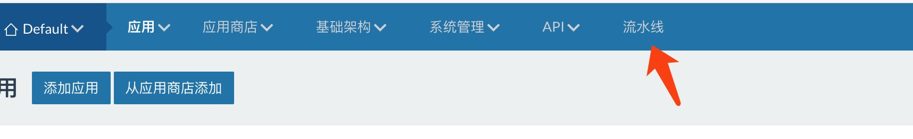
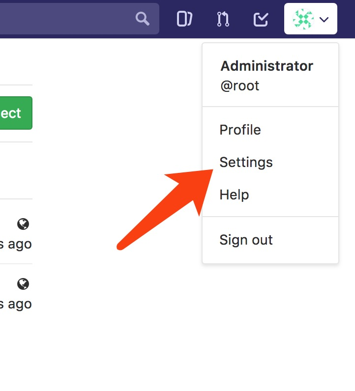
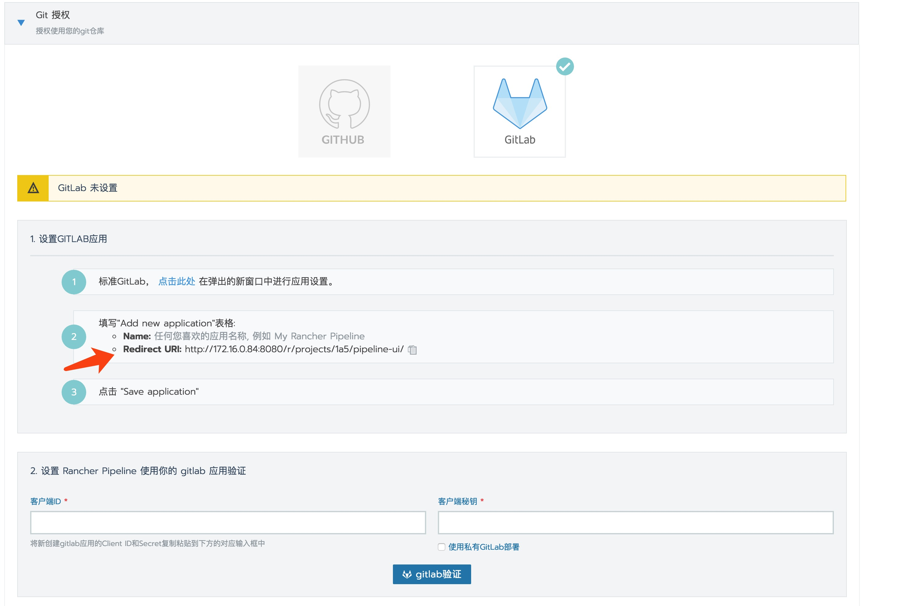
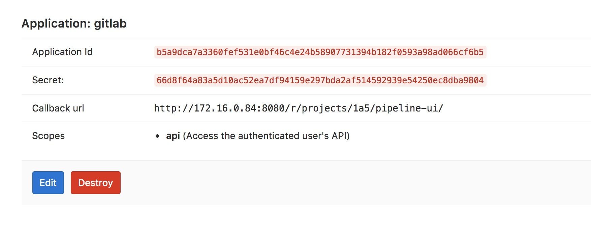
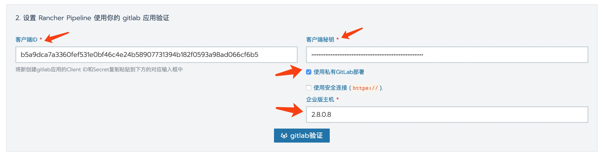
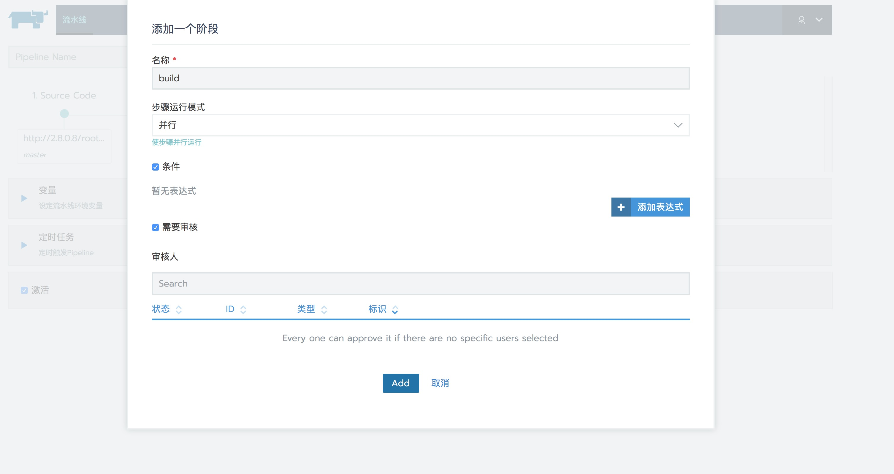
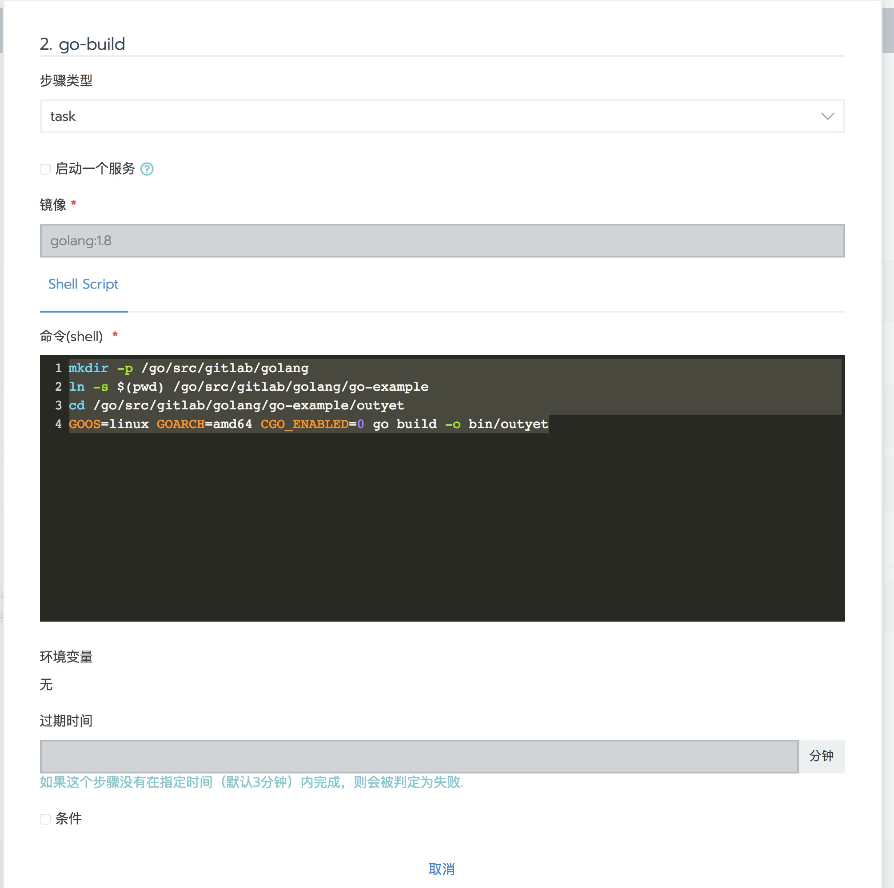
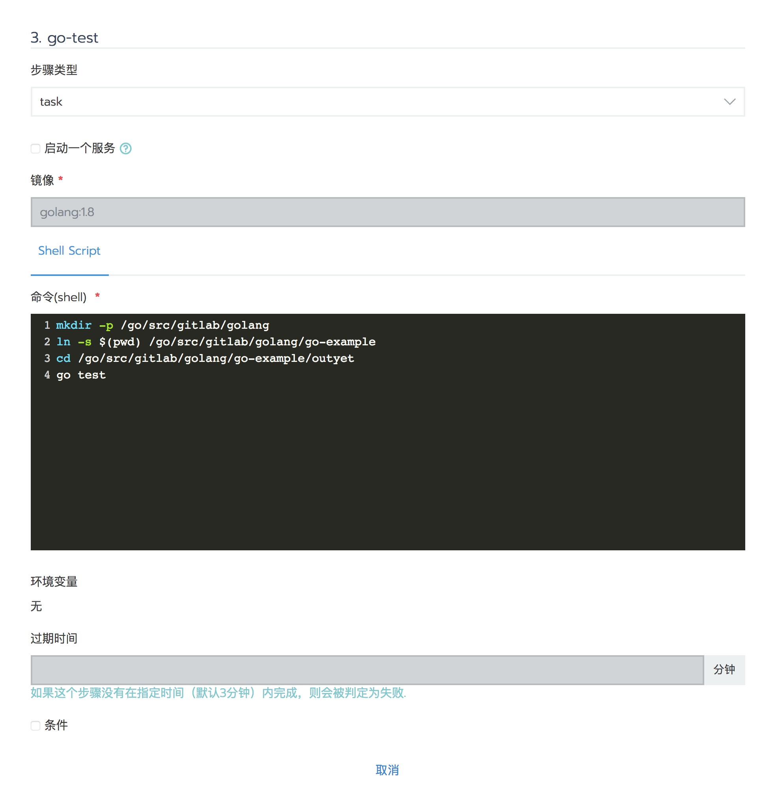
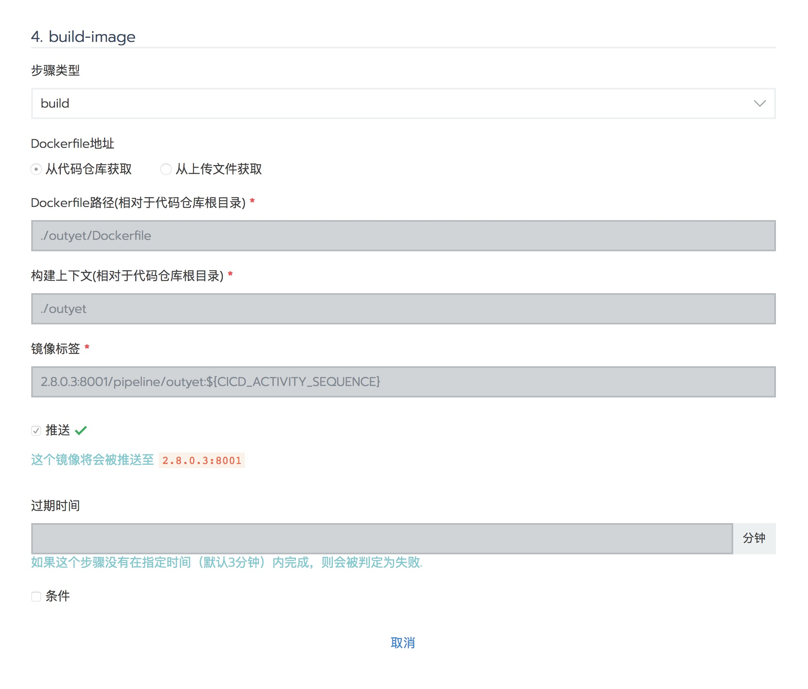
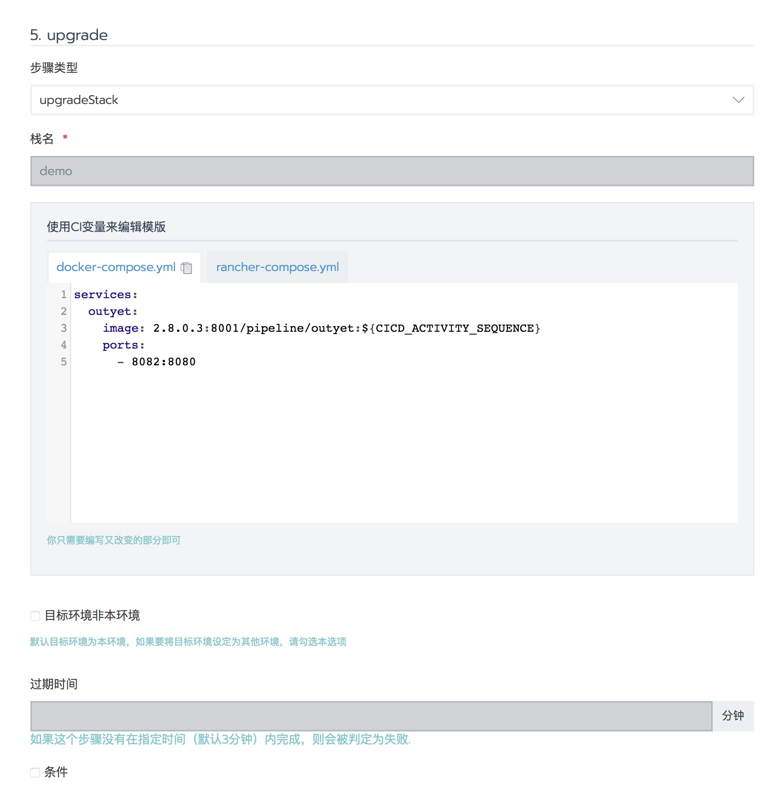

<!DOCTYPE html>
<html lang="zh-Hans">
<head>
  <meta charset="UTF-8">
<meta name="viewport" content="width=device-width, initial-scale=1, maximum-scale=2">
<meta name="theme-color" content="#222">
<meta name="generator" content="Hexo 4.1.0">
  <link rel="apple-touch-icon" sizes="180x180" href="/images/icon.jpg">
  <link rel="icon" type="image/png" sizes="32x32" href="/images/icon.jpg">
  <link rel="icon" type="image/png" sizes="16x16" href="/images/icon.jpg">
  <link rel="mask-icon" href="/images/icon.jpg" color="#222">

<link rel="stylesheet" href="/css/main.css">


<link rel="stylesheet" href="/lib/font-awesome/css/font-awesome.min.css">


<script id="hexo-configurations">
  var NexT = window.NexT || {};
  var CONFIG = {
    hostname: new URL('http://Beritra.github.com').hostname,
    root: '/',
    scheme: 'Pisces',
    version: '7.6.0',
    exturl: false,
    sidebar: {"position":"left","display":"post","padding":18,"offset":12,"onmobile":false},
    copycode: {"enable":false,"show_result":false,"style":null},
    back2top: {"enable":true,"sidebar":false,"scrollpercent":false},
    bookmark: {"enable":false,"color":"#222","save":"auto"},
    fancybox: false,
    mediumzoom: false,
    lazyload: false,
    pangu: false,
    comments: {"style":"tabs","active":null,"storage":true,"lazyload":false,"nav":null},
    algolia: {
      appID: '',
      apiKey: '',
      indexName: '',
      hits: {"per_page":10},
      labels: {"input_placeholder":"Search for Posts","hits_empty":"We didn't find any results for the search: ${query}","hits_stats":"${hits} results found in ${time} ms"}
    },
    localsearch: {"enable":true,"trigger":"auto","top_n_per_article":1,"unescape":false,"preload":false},
    path: 'search.xml',
    motion: {"enable":true,"async":false,"transition":{"post_block":"fadeIn","post_header":"slideDownIn","post_body":"slideDownIn","coll_header":"slideLeftIn","sidebar":"slideUpIn"}}
  };
</script>

  <meta name="description" content="最近的工作任务是研究Docker、Rancher上CI&#x2F;CD 流程，记录一些学习过程。">
<meta property="og:type" content="article">
<meta property="og:title" content="Rancher CI&#x2F;CD Pipeline 初步学习">
<meta property="og:url" content="http:&#x2F;&#x2F;beritra.github.com&#x2F;2018&#x2F;02&#x2F;06&#x2F;Rancher-CI-CD-Pipeline-%E5%88%9D%E6%AD%A5%E5%AD%A6%E4%B9%A0&#x2F;index.html">
<meta property="og:site_name" content="Beritra">
<meta property="og:description" content="最近的工作任务是研究Docker、Rancher上CI&#x2F;CD 流程，记录一些学习过程。">
<meta property="og:image" content="http:&#x2F;&#x2F;beritra.github.com&#x2F;2018&#x2F;02&#x2F;06&#x2F;Rancher-CI-CD-Pipeline-%E5%88%9D%E6%AD%A5%E5%AD%A6%E4%B9%A0&#x2F;1.jpg">
<meta property="og:image" content="http:&#x2F;&#x2F;beritra.github.com&#x2F;2018&#x2F;02&#x2F;06&#x2F;Rancher-CI-CD-Pipeline-%E5%88%9D%E6%AD%A5%E5%AD%A6%E4%B9%A0&#x2F;2.jpg">
<meta property="og:image" content="http:&#x2F;&#x2F;beritra.github.com&#x2F;2018&#x2F;02&#x2F;06&#x2F;Rancher-CI-CD-Pipeline-%E5%88%9D%E6%AD%A5%E5%AD%A6%E4%B9%A0&#x2F;3.jpg">
<meta property="og:image" content="http:&#x2F;&#x2F;beritra.github.com&#x2F;2018&#x2F;02&#x2F;06&#x2F;Rancher-CI-CD-Pipeline-%E5%88%9D%E6%AD%A5%E5%AD%A6%E4%B9%A0&#x2F;5.jpg">
<meta property="og:image" content="http:&#x2F;&#x2F;beritra.github.com&#x2F;2018&#x2F;02&#x2F;06&#x2F;Rancher-CI-CD-Pipeline-%E5%88%9D%E6%AD%A5%E5%AD%A6%E4%B9%A0&#x2F;4.jpg">
<meta property="og:image" content="http:&#x2F;&#x2F;beritra.github.com&#x2F;2018&#x2F;02&#x2F;06&#x2F;Rancher-CI-CD-Pipeline-%E5%88%9D%E6%AD%A5%E5%AD%A6%E4%B9%A0&#x2F;6.jpg">
<meta property="og:image" content="http:&#x2F;&#x2F;beritra.github.com&#x2F;2018&#x2F;02&#x2F;06&#x2F;Rancher-CI-CD-Pipeline-%E5%88%9D%E6%AD%A5%E5%AD%A6%E4%B9%A0&#x2F;7.jpg">
<meta property="og:image" content="http:&#x2F;&#x2F;beritra.github.com&#x2F;2018&#x2F;02&#x2F;06&#x2F;Rancher-CI-CD-Pipeline-%E5%88%9D%E6%AD%A5%E5%AD%A6%E4%B9%A0&#x2F;8.jpg">
<meta property="og:image" content="http:&#x2F;&#x2F;beritra.github.com&#x2F;2018&#x2F;02&#x2F;06&#x2F;Rancher-CI-CD-Pipeline-%E5%88%9D%E6%AD%A5%E5%AD%A6%E4%B9%A0&#x2F;9.jpg">
<meta property="og:image" content="http:&#x2F;&#x2F;beritra.github.com&#x2F;2018&#x2F;02&#x2F;06&#x2F;Rancher-CI-CD-Pipeline-%E5%88%9D%E6%AD%A5%E5%AD%A6%E4%B9%A0&#x2F;10.jpg">
<meta property="og:image" content="http:&#x2F;&#x2F;beritra.github.com&#x2F;2018&#x2F;02&#x2F;06&#x2F;Rancher-CI-CD-Pipeline-%E5%88%9D%E6%AD%A5%E5%AD%A6%E4%B9%A0&#x2F;11.jpg">
<meta property="og:image" content="http:&#x2F;&#x2F;beritra.github.com&#x2F;2018&#x2F;02&#x2F;06&#x2F;Rancher-CI-CD-Pipeline-%E5%88%9D%E6%AD%A5%E5%AD%A6%E4%B9%A0&#x2F;12.jpg">
<meta property="article:published_time" content="2018-02-06T04:00:50.000Z">
<meta property="article:modified_time" content="2019-12-15T15:45:08.513Z">
<meta property="article:author" content="Beritra">
<meta property="article:tag" content="CI&#x2F;CD">
<meta property="article:tag" content="容器云">
<meta property="article:tag" content="Rancher">
<meta property="article:tag" content="Docker">
<meta name="twitter:card" content="summary">
<meta name="twitter:image" content="http:&#x2F;&#x2F;beritra.github.com&#x2F;2018&#x2F;02&#x2F;06&#x2F;Rancher-CI-CD-Pipeline-%E5%88%9D%E6%AD%A5%E5%AD%A6%E4%B9%A0&#x2F;1.jpg">

<link rel="canonical" href="http://beritra.github.com/2018/02/06/Rancher-CI-CD-Pipeline-%E5%88%9D%E6%AD%A5%E5%AD%A6%E4%B9%A0/">


<script id="page-configurations">
  // https://hexo.io/docs/variables.html
  CONFIG.page = {
    sidebar: "",
    isHome: false,
    isPost: true
  };
</script>

  <title>Rancher CI/CD Pipeline 初步学习 | Beritra</title>
  


  <noscript>
  <style>
  .use-motion .brand,
  .use-motion .menu-item,
  .sidebar-inner,
  .use-motion .post-block,
  .use-motion .pagination,
  .use-motion .comments,
  .use-motion .post-header,
  .use-motion .post-body,
  .use-motion .collection-header { opacity: initial; }

  .use-motion .site-title,
  .use-motion .site-subtitle {
    opacity: initial;
    top: initial;
  }

  .use-motion .logo-line-before i { left: initial; }
  .use-motion .logo-line-after i { right: initial; }
  </style>
</noscript>

</head>

<body itemscope itemtype="http://schema.org/WebPage">
  <div class="container use-motion">
    <div class="headband"></div>

    <header class="header" itemscope itemtype="http://schema.org/WPHeader">
      <div class="header-inner"><div class="site-brand-container">
  <div class="site-meta">

    <div>
      <a href="/" class="brand" rel="start">
        <span class="logo-line-before"><i></i></span>
        <span class="site-title">Beritra</span>
        <span class="logo-line-after"><i></i></span>
      </a>
    </div>
        <p class="site-subtitle">Blogs</p>
  </div>

  <div class="site-nav-toggle">
    <div class="toggle" aria-label="切换导航栏">
      <span class="toggle-line toggle-line-first"></span>
      <span class="toggle-line toggle-line-middle"></span>
      <span class="toggle-line toggle-line-last"></span>
    </div>
  </div>
</div>


<nav class="site-nav">
  
  <ul id="menu" class="menu">
        <li class="menu-item menu-item-home">

    <a href="/" rel="section"><i class="fa fa-fw fa-home"></i>首页</a>

  </li>
        <li class="menu-item menu-item-about">

    <a href="/about/" rel="section"><i class="fa fa-fw fa-user"></i>关于</a>

  </li>
        <li class="menu-item menu-item-tags">

    <a href="/tags/" rel="section"><i class="fa fa-fw fa-tags"></i>标签</a>

  </li>
        <li class="menu-item menu-item-categories">

    <a href="/categories/" rel="section"><i class="fa fa-fw fa-th"></i>分类</a>

  </li>
        <li class="menu-item menu-item-archives">

    <a href="/archives/" rel="section"><i class="fa fa-fw fa-archive"></i>归档</a>

  </li>
      <li class="menu-item menu-item-search">
        <a role="button" class="popup-trigger"><i class="fa fa-search fa-fw"></i>搜索
        </a>
      </li>
  </ul>

</nav>
  <div class="site-search">
    <div class="popup search-popup">
    <div class="search-header">
  <span class="search-icon">
    <i class="fa fa-search"></i>
  </span>
  <div class="search-input-container">
    <input autocomplete="off" autocorrect="off" autocapitalize="none"
           placeholder="搜索..." spellcheck="false"
           type="text" id="search-input">
  </div>
  <span class="popup-btn-close">
    <i class="fa fa-times-circle"></i>
  </span>
</div>
<div id="search-result"></div>

</div>
<div class="search-pop-overlay"></div>

  </div>
</div>
    </header>

    
  <div class="back-to-top">
    <i class="fa fa-arrow-up"></i>
    <span>0%</span>
  </div>


    <main class="main">
      <div class="main-inner">
        <div class="content-wrap">
          

          <div class="content">
            

  <div class="posts-expand">
      
  
  
  <article itemscope itemtype="http://schema.org/Article" class="post-block " lang="zh-Hans">
    <link itemprop="mainEntityOfPage" href="http://beritra.github.com/2018/02/06/Rancher-CI-CD-Pipeline-%E5%88%9D%E6%AD%A5%E5%AD%A6%E4%B9%A0/">

    <span hidden itemprop="author" itemscope itemtype="http://schema.org/Person">
      <meta itemprop="image" content="/images/avator.jpg">
      <meta itemprop="name" content="Beritra">
      <meta itemprop="description" content="Beritra's Blogs">
    </span>

    <span hidden itemprop="publisher" itemscope itemtype="http://schema.org/Organization">
      <meta itemprop="name" content="Beritra">
    </span>
      <header class="post-header">
        <h1 class="post-title" itemprop="name headline">
          Rancher CI/CD Pipeline 初步学习
        </h1>

        <div class="post-meta">
            <span class="post-meta-item">
              <span class="post-meta-item-icon">
                <i class="fa fa-calendar-o"></i>
              </span>
              <span class="post-meta-item-text">发表于</span>

              <time title="创建时间：2018-02-06 12:00:50" itemprop="dateCreated datePublished" datetime="2018-02-06T12:00:50+08:00">2018-02-06</time>
            </span>
              <span class="post-meta-item">
                <span class="post-meta-item-icon">
                  <i class="fa fa-calendar-check-o"></i>
                </span>
                <span class="post-meta-item-text">更新于</span>
                <time title="修改时间：2019-12-15 23:45:08" itemprop="dateModified" datetime="2019-12-15T23:45:08+08:00">2019-12-15</time>
              </span>
            <span class="post-meta-item">
              <span class="post-meta-item-icon">
                <i class="fa fa-folder-o"></i>
              </span>
              <span class="post-meta-item-text">分类于</span>
                <span itemprop="about" itemscope itemtype="http://schema.org/Thing">
                  <a href="/categories/%E5%AE%B9%E5%99%A8/" itemprop="url" rel="index">
                    <span itemprop="name">容器</span>
                  </a>
                </span>
            </span>

          <br>
            <span class="post-meta-item" title="本文字数">
              <span class="post-meta-item-icon">
                <i class="fa fa-file-word-o"></i>
              </span>
                <span class="post-meta-item-text">本文字数：</span>
              <span>5.6k</span>
            </span>
            <span class="post-meta-item" title="阅读时长">
              <span class="post-meta-item-icon">
                <i class="fa fa-clock-o"></i>
              </span>
                <span class="post-meta-item-text">阅读时长 &asymp;</span>
              <span>9 分钟</span>
            </span>

        </div>
      </header>

    
    
    
    <div class="post-body" itemprop="articleBody">

      
        <p>最近的工作任务是研究Docker、Rancher上CI/CD 流程，记录一些学习过程。</p>
<a id="more"></a>

<h2 id="什么是CI-CD"><a href="#什么是CI-CD" class="headerlink" title="什么是CI/CD"></a>什么是CI/CD</h2><p>CI/CD的意思就是持续集成(Continuous integration)和持续交付(continuous delivery)或持续部署(continuous deployment)。这三个步骤组成了现在软件开发的基本流程。</p>
<p>初次接触到这些概念基本是懵的，尤其是小公司或者传统软件行业，对软件迭代速度没那么高的要求。什么叫集成？怎么算持续？集成的意思就是说快速的把新开发的特性合并到主干上，可以理解为git上把某一个feature分支合并到master上，不过这一过程还包括了程序的构建和测试。持续集成一般是指每天进行很多次集成，它的目的主要是快速的更新产品，既能方便调整方向，又能及时发现bug，从而实现了“小步快跑”的策略。</p>
<p>而持续交付是指频繁的将产品交到用户或者质量评审团队手里，以供评审，通过之后就可以进入到生产。持续部署是指自动化部署到生产环境。通过实施CI/CD，可以在一天进行很多次的产品迭代，从而提升竞争力。</p>
<p>CI/CD的一般流程也就是软件开发的生命周期，只不过完全将其自动化。从git进行代码提交开始，webhook检测到提交事件之后，开始进行单元测试，测试通过之后，将代码合并到主分支，然后进行构建。构建完成在进行集成测试、系统测试，测试无误就可以交付了。然后进行部署，其中可能会有灰度发布，或者用户体验不佳然后进行版本回滚的操作。</p>
<h2 id="基于Docker的CI-CD有什么优势"><a href="#基于Docker的CI-CD有什么优势" class="headerlink" title="基于Docker的CI/CD有什么优势"></a>基于Docker的CI/CD有什么优势</h2><p>由于自身理解不深，搜集了一些博文的观点：</p>
<blockquote>
<p>一个完整的流程入是这样的，用户（也就是开发人员）将包含Dockerfile的源码从本地push到Git服务器上，然后触发Jenkins进行构建源码，源码构建完成后紧接着进行Docker image的构建，一切构建完成之后，顺带将构建成功的image上传到企业内部的镜像仓库，到此刻为止，其实一个基本的CI（持续集成）已经算是结束，剩下的部分就是持续部署或者进行持续的交付开发产物了。在以前传统的软件发布模式中，持续集成的产物是编译打包好的代码，如果想要发布程序，发布系统需要在持续集成的制品库中去获得对应的代码，然后根据一系列的环境检查来准备应用的运行时环境，而在此过程中往往会涉及到比较多的基本组件依赖，所以在整体的发布周期内来看，还是有一些问题的。在Docker或者容器时代，我们将容器的镜像构建部分融入到持续集成（CI）环节，最终持续集成的产出物是一些已经处理好依赖关系，基本不需要人工进行二次干预的Docker image，而在CD环节，发布系统只需要设置和管理很少的信息就能够很快将image运行起来，快速地将业务发布出去。<br>在上面整个环节中，其实无非就是增加了Docker的那一层处理，但其实在整个软件开发的生命周期中，它是产生了极大的影响的。首先，部署系统不需要为统一的部署框架去做更多逻辑抽象，业务研发在开发代码的过程中选择自己依赖的base image即可，最终运行起来的业务也就是你当时提供的base image的模样；其次，由于base image已经处理好了相关的依赖，所以当发布系统拿到业务的image的时候，发布操作将会变得异常迅速，这对于互联网时代可谓是非常重要的；最后一点，也是我感受最深的，就是研发构建好的image可以在任何的Docker环境中run起来，研发人员不需要再关系环境一致性的问题，他们在自己本地的测试环境能够运行起来的应用，那么到生成环境也一定可以。<br>——<a href="http://dockone.io/article/2482" target="_blank" rel="noopener">基于Docker的CI/CD流水线实践</a></p>
</blockquote>
<h2 id="一个想象的Java-CI-CD-流程"><a href="#一个想象的Java-CI-CD-流程" class="headerlink" title="一个想象的Java CI/CD 流程"></a>一个想象的Java CI/CD 流程</h2><p>说了一堆理论的东西，回归到实际环境，由于我们公司主要开发语言是Java，我就先想象了一下对于Java语言，应该是个怎么样的CI/CD流程。首先，研发人员开发完成某一阶段之后，提交代码到主分支，然后触发webhook，开启pipeline。首先，应该在一个带有JDK的容器中下载代码，然后用maven下载依赖、编译、打包，然后运行测试，测试通过之后把class文件、jar包和配置文件转移到一个只含有jre的容器，进行镜像的构建步骤，然后推送到镜像仓库，最后将镜像发布，生成新的容器实例。</p>
<h2 id="重点关注问题"><a href="#重点关注问题" class="headerlink" title="重点关注问题"></a>重点关注问题</h2><p>关于CI/CD Pipeline，主要需要从以下几个方面着手考虑。</p>
<h3 id="崇伟提到重点关注的几个问题"><a href="#崇伟提到重点关注的几个问题" class="headerlink" title="崇伟提到重点关注的几个问题"></a>崇伟提到重点关注的几个问题</h3><ol>
<li>git分支管理大致怎样？</li>
<li>构建镜像的版本号如何管理？</li>
<li>测试环节，如何整合自动化测试？</li>
<li>推送镜像的目标harbor，是否区分开发环境/测试环境/正式环境？</li>
<li>发布流程是否可以控制，比如整合到运维的发布流管理系统？</li>
<li>灰度发布，调研时也需要关注</li>
</ol>
<h4 id="分支管理"><a href="#分支管理" class="headerlink" title="分支管理"></a>分支管理</h4><p>Rancher Pipeline的触发是用git某一个分支的webhook。每一个stage可以设置触发条件，包括commit ID、分支名、仓库url这三种进行区分。</p>
<p>这里需要考虑的主要问题是要如何指导研发人员的的git工作流，怎么设置分支，目标是尽量少的对现有方案进行改动。</p>
<p>这里可以参照两篇文章<a href="https://yaowenjie.github.io/devops/thinking-in-two-kinds-of-ci-cd-strategies-and-git-branch-models" target="_blank" rel="noopener">关于两种CI/CD策略与git分支模型的思考</a>、<a href="http://nvie.com/posts/a-successful-git-branching-model/" target="_blank" rel="noopener">A successful Git branch model</a></p>
<h4 id="版本号"><a href="#版本号" class="headerlink" title="版本号"></a>版本号</h4><p>Pipeline构建过程中可以使用以下变量：</p>
<table>
<thead>
<tr>
<th>NAME</th>
<th>DESC</th>
</tr>
</thead>
<tbody><tr>
<td>CICD_GIT_COMMIT</td>
<td>git commit sha</td>
</tr>
<tr>
<td>CICD_GIT_BRANCH</td>
<td>git branch</td>
</tr>
<tr>
<td>CICD_GIT_URL</td>
<td>git repository url</td>
</tr>
<tr>
<td>CICD_PIPELINE_ID</td>
<td>pipeline id</td>
</tr>
<tr>
<td>CICD_PIPELINE_NAME</td>
<td>pipeline name</td>
</tr>
<tr>
<td>CICD_TRIGGER_TYPE</td>
<td>trigger type</td>
</tr>
<tr>
<td>CICD_NODE_NAME</td>
<td>jenkins node name</td>
</tr>
<tr>
<td>CICD_ACTIVITY_ID</td>
<td>pipeline history record id</td>
</tr>
<tr>
<td>CICD_ACTIVITY_SEQUENCE</td>
<td>run number of pipeline history record</td>
</tr>
</tbody></table>
<p>都可以作为版本号，其中视频教程中推荐使用CICD_ACTIVITY_SEQUENCE，这基本可以当做一个Pileline的自增序号。</p>
<p>这里主要考虑得是在发布流中对版本号的控制。</p>
<h4 id="测试环节整合自动化测试"><a href="#测试环节整合自动化测试" class="headerlink" title="测试环节整合自动化测试"></a>测试环节整合自动化测试</h4><p>在一个步骤中选择类型为task之后，都可以执行shell，在这里可以调用自动化测试的命令。</p>
<h4 id="harbor是否区分环境"><a href="#harbor是否区分环境" class="headerlink" title="harbor是否区分环境"></a>harbor是否区分环境</h4><p>可以区分，不过通过仓库、镜像名、tag都可以作为区分，是不是还有必要分开多个环境？</p>
<h4 id="发布流程"><a href="#发布流程" class="headerlink" title="发布流程"></a>发布流程</h4><p>发布流程每一步都可以设置权限控制，相关人员确认后再进行下一步。</p>
<p>关于是否可以整合Jenkins插件，视频中说现在不支持，建议不要混搭。</p>
<h4 id="灰度发布"><a href="#灰度发布" class="headerlink" title="灰度发布"></a>灰度发布</h4><p>灰度发布的关键在于流量控制和版本控制，要求能快速切换版本，控制每个版本的流量。Rancher Pipeline中现有的相关操作是upgrade service可以设置步长，即选择保留的版本数量，同时可以选择先上线新版本再关闭旧版本，或是先关闭再上线，这个操作的时间间隔也可以设置。在Rancher操作界面中也可以随时会滚版本。关于流量控制可以使用HAproxy等负载均衡来做。</p>
<h3 id="现有的工具"><a href="#现有的工具" class="headerlink" title="现有的工具"></a>现有的工具</h3><p>询问多个同事得知，各个项目组还没有统一的流程，旭哥的eSim团队可能是相对比较健全的，之前使用过GitLab和Jenkins，现在基于方便考虑，切换到了同一家出品的Bitbucket+Bamboo。以ESim为例，当前的发布流程是这样：</p>
<ol>
<li>提交代码到各自feature分支</li>
<li>每日把各自feature分支合并到develop分支（触发自动化build），同时执行单元测试用例。有冲突解决冲突，直至冲突解决完成</li>
<li>develop拉release分支提测</li>
<li>测试通过在bamboo上将release发布</li>
</ol>
<h2 id="Rancher-Pipeline-Demo-环境搭建"><a href="#Rancher-Pipeline-Demo-环境搭建" class="headerlink" title="Rancher Pipeline Demo 环境搭建"></a>Rancher Pipeline Demo 环境搭建</h2><h3 id="启动环境"><a href="#启动环境" class="headerlink" title="启动环境"></a>启动环境</h3><p>Rancher Pipeline的搭建非常简单，首先需要满足Rancher server版本在v1.6.13以上，这里我们选择了v1.6.14。然后在商店里搜索pipeline就可以看到，不需要额外配置，启动服务就可以了。</p>
<p>启动完成之后，Rancher UI界面顶部菜单会出现一个新的按钮”流水线”，点击即可进入Pipeline界面。<br></p>
<h3 id="仓库认证和授权"><a href="#仓库认证和授权" class="headerlink" title="仓库认证和授权"></a>仓库认证和授权</h3><p>进入Pipeline界面之后，点击添加流水线，它会让你先完成仓库授权和添加代码仓库：<br></p>
<p>当前支持的代码仓库只有两个，GitHub和GitLab，我这里选择了自己部署的GitLab。首先打开Gitlab，登陆，点击右上角自己的头像，在下拉菜单中选择setting：<br></p>
<p>然后在新的页面里选择application，name里面取个名字，Redirect URI是Pipeline提供给你的，复制过来就行，然后选一个权限，我选择的api，最后保存：<br></p>
<p>其中，Redirect URI 在这里：<br></p>
<p>都完成之后，GitLab会生成一个ID和密钥，将这两个值复制到Pipeline中：<br></p>
<p>然后别忘了选中”使用私有GitLab部署”，然后填上ip，就可以了，最后点击gitlab验证。<br></p>
<p>页面会跳到GitLab，点击认证，这一步就完了。</p>
<h3 id="流水线配置"><a href="#流水线配置" class="headerlink" title="流水线配置"></a>流水线配置</h3><p>回到流水线界面，点击添加流水线，会让你选择git用户、仓库和分支，按照各自情况选好需要跟踪的分支，点击添加，第一个阶段就完成了。</p>
<p>然后点击添加第二个阶段，这里可以选择并行或者串行，这里的并行或者串行是指本构建阶段(stage)下的每个步骤(step)执行逻辑。同时可以看到，这里有两个可选选项，分别提供条件筛选和审核。如果不满足条件，步骤不执行。或者执行到这一步的，等待审核人审核，审核通过之前不会执行。<br></p>
<p>添加完阶段之后添加一个步骤，Rancher教程以go语言为例，选择步骤类型为task，然后镜像为golang:1.8，输入需要执行的shell，这一步的作用就是把代码复制到相应的容器中，然后进行编译，使用容器作为编译环境保证了环境的一致性。这里的那些参数只是为了演示的时候加快变异速度，其实最重要的就是一步<code>go build</code><br></p>
<p>进行到这里，无误的话源代码已经编译完成，应该执行单元测试。所以下一个阶段基本相同，再添加一个阶段，添加一个步骤，步骤类型task，命令稍有不同。<br></p>
<p>单元测试完成，开始构建镜像。添加一个阶段，添加一个步骤，这里步骤类型选择build，这里的build是指build image。Dockerfile可以在这里填写，或者直接从代码中拉取，这里选择的是从代码中拉，由于只是demo，Dockerfile非常简单:</p>
<figure class="highlight plain"><table><tr><td class="gutter"><pre><span class="line">1</span></pre></td><td class="code"><pre><span class="line">FROM alpine</span></pre></td></tr><tr><td class="gutter"><pre><span class="line">2</span></pre></td><td class="code"><pre><span class="line">EXPOSE 8080</span></pre></td></tr><tr><td class="gutter"><pre><span class="line">3</span></pre></td><td class="code"><pre><span class="line">COPY .&#x2F;bin&#x2F;outyet &#x2F;usr&#x2F;bin&#x2F;outyet</span></pre></td></tr><tr><td class="gutter"><pre><span class="line">4</span></pre></td><td class="code"><pre><span class="line">ENTRYPOINT &#x2F;usr&#x2F;bin&#x2F;outyet</span></pre></td></tr></table></figure>
<p>同时可以看到镜像标签那里使用了上面说到的变量<code>CICD_ACTIVITY_SEQUENCE</code>，可以看做是一个自增序列。<br>这一步顺利完成之后，就构建好了一个名为outyet的镜像，版本号是一个数字，然后被推送到2.8.0.3:8001/pipeline仓库。<br></p>
<p>进行到这里，自动集成的步骤就完成了。然后应该把镜像推送到Rancher中，产生容器实例，进行自动发布。新建一个阶段，添加一个步骤，这里步骤类型选择为upgradeStack。编写docker-compose配置文件，Pipeline会自动从仓库中拉取镜像，然后产生容器实例，更新之前发布的版本。<br></p>
<h2 id="实际应用下的步骤"><a href="#实际应用下的步骤" class="headerlink" title="实际应用下的步骤"></a>实际应用下的步骤</h2><p>上面基于GoLang语言的Demo是一个最小化的步骤示例，其实对于go语言来讲，编译是很简单的一个步骤，因为没有其他语言复杂的包依赖，构建产物也是直接的可执行文件，最后直接执行即可。但是对于公司广泛应用的Java来说，构建步骤需要考虑Jar包依赖的情况，而一般以来的Jar包都是通过maven管理，git上面是不会记录的，所以拉下来的源代码没办法直接进行编译。</p>
<p>第一反应是想到了两种方式：</p>
<ol>
<li>研发使用统一的基础镜像，在本地进行编译和打包，我们后续只对镜像进行管理。Intellij IDEA提供了插件倒是方便了直接生成镜像。</li>
<li>提供maven环境，统一在服务器上进行编译和打包，研发还是只提供源码就好。</li>
</ol>
<p>第一种想法很快就被舍弃，因为研发小伙伴未必都对docker了解，水平参差不齐的话很难对镜像进行要求和管理，学习成本略高。maven环境的话只需要把第二个阶段里golang镜像换成一个包含jdk、maven的镜像即可。</p>
<p>所以，结合现有的git flow，建议一个完整的开发流程如下：</p>
<ol>
<li>研发人员在各自负责的模块新开feature分支，强制要求每日合并到develop分支，强制要求编写单元测试用例。</li>
<li>在完成阶段性开发之后，develop分支合并到release分支或者master分支，触发webhook，开启Pipelin。</li>
<li>Rancher Pipeline 将代码下载到一个包含JDK和maven的镜像中，进行编译和打包。</li>
<li>执行单元测试。</li>
<li>测试无误之后，以一个只含有JRE的基础镜像中构建一个新的应用镜像，推送到Harbor。</li>
<li>测试环境从Harbor拉取镜像，产生容器示例，供QA进行完整的测试。</li>
<li>测试无误后发布到正式环境，这一步应当选择QA人员为审核人，审核通过的话自动发布。</li>
</ol>
<h2 id="其他"><a href="#其他" class="headerlink" title="其他"></a>其他</h2><p>了解相关信息的过程中，也听到了一些其他的方案，比如Gogs搭配jenkins，或者GitOps和Kubernetes。但是前者集成度不佳，后者依赖于我们尚未使用的K8s，所以暂不做考虑。Rancher分享中提到的Drone似乎也是一个不错的选择，可以直接对接企业微信，推送状态，精力原因还没做详细了解，后续再进行对比。</p>
<p>参考：<br><a href="https://github.com/rancher/pipeline/blob/master/docs/README.md" target="_blank" rel="noopener">Rancher Pipeline Referince Guide</a></p>

    </div>

    
    
    

      <footer class="post-footer">
          <div class="post-tags">
              <a href="/tags/CI-CD/" rel="tag"># CI/CD</a>
              <a href="/tags/%E5%AE%B9%E5%99%A8%E4%BA%91/" rel="tag"># 容器云</a>
              <a href="/tags/Rancher/" rel="tag"># Rancher</a>
              <a href="/tags/Docker/" rel="tag"># Docker</a>
          </div>

        


        
    <div class="post-nav">
      <div class="post-nav-item">
    <a href="/2018/01/26/ELK%E5%BA%94%E7%94%A8%E6%A0%88%E7%9A%84%E6%90%AD%E5%BB%BA%E5%92%8C%E6%B5%8B%E8%AF%95/" rel="prev" title="ELK应用栈的搭建和测试">
      <i class="fa fa-chevron-left"></i> ELK应用栈的搭建和测试
    </a></div>
      <div class="post-nav-item">
    <a href="/2018/04/17/%E6%9C%BA%E5%99%A8%E5%AD%A6%E4%B9%A0%EF%BC%88%E4%B8%80%EF%BC%89%E7%BA%BF%E6%80%A7%E5%9B%9E%E5%BD%92/" rel="next" title="机器学习（一）线性回归">
      机器学习（一）线性回归 <i class="fa fa-chevron-right"></i>
    </a></div>
    </div>
      </footer>
    
  </article>
  
  
  

  </div>


          </div>
          

<script>
  window.addEventListener('tabs:register', () => {
    let activeClass = CONFIG.comments.activeClass;
    if (CONFIG.comments.storage) {
      activeClass = localStorage.getItem('comments_active') || activeClass;
    }
    if (activeClass) {
      let activeTab = document.querySelector(`a[href="#comment-${activeClass}"]`);
      if (activeTab) {
        activeTab.click();
      }
    }
  });
  if (CONFIG.comments.storage) {
    window.addEventListener('tabs:click', event => {
      if (!event.target.matches('.tabs-comment .tab-content .tab-pane')) return;
      let commentClass = event.target.classList[1];
      localStorage.setItem('comments_active', commentClass);
    });
  }
</script>

        </div>
          
  
  <div class="toggle sidebar-toggle">
    <span class="toggle-line toggle-line-first"></span>
    <span class="toggle-line toggle-line-middle"></span>
    <span class="toggle-line toggle-line-last"></span>
  </div>

  <aside class="sidebar">
    <div class="sidebar-inner">

      <ul class="sidebar-nav motion-element">
        <li class="sidebar-nav-toc">
          文章目录
        </li>
        <li class="sidebar-nav-overview">
          站点概览
        </li>
      </ul>

      <!--noindex-->
      <div class="post-toc-wrap sidebar-panel">
          <div class="post-toc motion-element"><ol class="nav"><li class="nav-item nav-level-2"><a class="nav-link" href="#什么是CI-CD"><span class="nav-number">1.</span> <span class="nav-text">什么是CI&#x2F;CD</span></a></li><li class="nav-item nav-level-2"><a class="nav-link" href="#基于Docker的CI-CD有什么优势"><span class="nav-number">2.</span> <span class="nav-text">基于Docker的CI&#x2F;CD有什么优势</span></a></li><li class="nav-item nav-level-2"><a class="nav-link" href="#一个想象的Java-CI-CD-流程"><span class="nav-number">3.</span> <span class="nav-text">一个想象的Java CI&#x2F;CD 流程</span></a></li><li class="nav-item nav-level-2"><a class="nav-link" href="#重点关注问题"><span class="nav-number">4.</span> <span class="nav-text">重点关注问题</span></a><ol class="nav-child"><li class="nav-item nav-level-3"><a class="nav-link" href="#崇伟提到重点关注的几个问题"><span class="nav-number">4.1.</span> <span class="nav-text">崇伟提到重点关注的几个问题</span></a><ol class="nav-child"><li class="nav-item nav-level-4"><a class="nav-link" href="#分支管理"><span class="nav-number">4.1.1.</span> <span class="nav-text">分支管理</span></a></li><li class="nav-item nav-level-4"><a class="nav-link" href="#版本号"><span class="nav-number">4.1.2.</span> <span class="nav-text">版本号</span></a></li><li class="nav-item nav-level-4"><a class="nav-link" href="#测试环节整合自动化测试"><span class="nav-number">4.1.3.</span> <span class="nav-text">测试环节整合自动化测试</span></a></li><li class="nav-item nav-level-4"><a class="nav-link" href="#harbor是否区分环境"><span class="nav-number">4.1.4.</span> <span class="nav-text">harbor是否区分环境</span></a></li><li class="nav-item nav-level-4"><a class="nav-link" href="#发布流程"><span class="nav-number">4.1.5.</span> <span class="nav-text">发布流程</span></a></li><li class="nav-item nav-level-4"><a class="nav-link" href="#灰度发布"><span class="nav-number">4.1.6.</span> <span class="nav-text">灰度发布</span></a></li></ol></li><li class="nav-item nav-level-3"><a class="nav-link" href="#现有的工具"><span class="nav-number">4.2.</span> <span class="nav-text">现有的工具</span></a></li></ol></li><li class="nav-item nav-level-2"><a class="nav-link" href="#Rancher-Pipeline-Demo-环境搭建"><span class="nav-number">5.</span> <span class="nav-text">Rancher Pipeline Demo 环境搭建</span></a><ol class="nav-child"><li class="nav-item nav-level-3"><a class="nav-link" href="#启动环境"><span class="nav-number">5.1.</span> <span class="nav-text">启动环境</span></a></li><li class="nav-item nav-level-3"><a class="nav-link" href="#仓库认证和授权"><span class="nav-number">5.2.</span> <span class="nav-text">仓库认证和授权</span></a></li><li class="nav-item nav-level-3"><a class="nav-link" href="#流水线配置"><span class="nav-number">5.3.</span> <span class="nav-text">流水线配置</span></a></li></ol></li><li class="nav-item nav-level-2"><a class="nav-link" href="#实际应用下的步骤"><span class="nav-number">6.</span> <span class="nav-text">实际应用下的步骤</span></a></li><li class="nav-item nav-level-2"><a class="nav-link" href="#其他"><span class="nav-number">7.</span> <span class="nav-text">其他</span></a></li></ol></div>
      </div>
      <!--/noindex-->

      <div class="site-overview-wrap sidebar-panel">
        <div class="site-author motion-element" itemprop="author" itemscope itemtype="http://schema.org/Person">
    
  <p class="site-author-name" itemprop="name">Beritra</p>
  <div class="site-description" itemprop="description">Beritra's Blogs</div>
</div>
<div class="site-state-wrap motion-element">
  <nav class="site-state">
      <div class="site-state-item site-state-posts">
          <a href="/archives/">
        
          <span class="site-state-item-count">32</span>
          <span class="site-state-item-name">日志</span>
        </a>
      </div>
      <div class="site-state-item site-state-categories">
            <a href="/categories/">
          
        <span class="site-state-item-count">19</span>
        <span class="site-state-item-name">分类</span></a>
      </div>
      <div class="site-state-item site-state-tags">
            <a href="/tags/">
          
        <span class="site-state-item-count">45</span>
        <span class="site-state-item-name">标签</span></a>
      </div>
  </nav>
</div>
  <div class="links-of-author motion-element">
      <span class="links-of-author-item">
        <a href="https://github.com/beritra" title="Github → https:&#x2F;&#x2F;github.com&#x2F;beritra" rel="noopener" target="_blank"><i class="fa fa-fw fa-github"></i>Github</a>
      </span>
      <span class="links-of-author-item">
        <a href="http://weibo.com/u/3315421093" title="Weibo → http:&#x2F;&#x2F;weibo.com&#x2F;u&#x2F;3315421093" rel="noopener" target="_blank"><i class="fa fa-fw fa-weibo"></i>Weibo</a>
      </span>
  </div>


      </div>

    </div>
  </aside>
  <div id="sidebar-dimmer"></div>


      </div>
    </main>

    <footer class="footer">
      <div class="footer-inner">
        
  <div class="beian"><a href="http://www.beian.miit.gov.cn/" rel="noopener" target="_blank">京ICP备16042931号-3 </a>
  </div>

<div class="copyright">
  
  &copy; 
  <span itemprop="copyrightYear">2020</span>
  <span class="with-love">
    <i class="fa fa-heart"></i>
  </span>
  <span class="author" itemprop="copyrightHolder">Beritra</span>
    <span class="post-meta-divider">|</span>
    <span class="post-meta-item-icon">
      <i class="fa fa-area-chart"></i>
    </span>
    <span title="站点总字数">276k</span>
    <span class="post-meta-divider">|</span>
    <span class="post-meta-item-icon">
      <i class="fa fa-coffee"></i>
    </span>
    <span title="站点阅读时长">7:39</span>
</div>

        


      </div>
    </footer>
  </div>

  
  <script src="/lib/anime.min.js"></script>
  <script src="/lib/velocity/velocity.min.js"></script>
  <script src="/lib/velocity/velocity.ui.min.js"></script>

<script src="/js/utils.js"></script>

<script src="/js/motion.js"></script>


<script src="/js/schemes/pisces.js"></script>


<script src="/js/next-boot.js"></script>


  


  
<script src="/js/local-search.js"></script>


  

  

</body>
</html>
